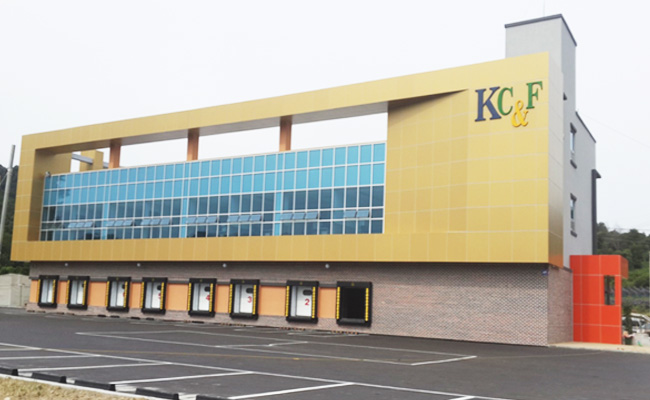

<?php include_once("./header.html"); ?>

<div class="ac_wrap main_content">
	<div class="ac_container type_center">


		<link rel="stylesheet" href="./js/jquery.bxslider/jquery.bxslider.build.css">
		<script src="./js/jquery.bxslider/jquery.bxslider.build.js"></script>

		<section class="main_section_1">
			<ul class="build_slider">
			<?php for($i=0; $i<5; $i++):?>
				<li>
					<div class="desc">
						<h2>공사실적현황</h2>
						<h3>한국씨엔에프 제조공장 신축공사</h3>
						<span class="title_line">&nbsp;</span>
						<p class="desc_tit">공사기간</p>
						<p class="desc_con">2016.08.15  -  2017.11.30 </p>
						<p class="desc_tit">공사위치 </p>
						<p class="desc_con">경상북도 청도군 청도읍 고수리 842-1번지 외2필지</p>
					</div>
					<div class="thumb"><a href="javascript:;" ></a></div>
				</li>
			<?php endfor; ?>
			</ul>
			<div class="slide-number">
				<span class="slide-current"></span>/<span class="slide-max"></span>
			</div>
			<span id="build-slider-prev"></span> <!-- 이전 -->
			<span id="build-slider-next"></span> <!-- 다음 -->
		</section><!-- .main_section_1 -->

		<script type="text/javascript">
			$(document).ready(function(){
				var build_slide = $('.build_slider').build_bxSlider({
					auto: true,
					infiniteLoop: true,
					wrapperClass: 'build-wrapper',
					autoControls: false,
					adaptiveHeight: false,
					pager:false,
					nextSelector: '#build-slider-next',
					prevSelector: '#build-slider-prev',
					speed:100,
					onSliderLoad: function(currentIndex){    
						$('.slide-current').text( currentIndex+1);   
					},
					onSlideAfter: function($slideElement, oldIndex, newIndex){    
						$('.slide-current').text( newIndex+1);   
					}
				});
				$('.slide-max').text(build_slide.getSlideCount());
				
				$('#build-slider-prev a, #build-slider-next a').click(function(){
					build_slide.stopAuto();
					build_slide.startAuto();
				});
			});
		</script>

		<section class="main_section_2">
			<aside class="section2_widget">
				<div class="tit_box"><h3>공사문의</h3> </div>
				<p class="opacity_60">신화종합건설만의<br>스마트한 건설을 원한다면?</p>
				<a href="javascript:;" class="widget_more"><span>문의하기</span></a>
			</aside>
		</section><!-- .main_section_2 -->

		<section class="main_section_3">
			<aside class="section3_widget">
				<div class="tit_box"><h3>공지사항</h3> </div>
				<a href="javascript:;" class="widget_more"><span>더보기</span></a>
				<p class="opacity_60">신화종합건설(주)의 새로운 소식을 확인하세요.</p>
				<ul class="article_list">
					<li>
						<a href="javascript:;">부산일보-부산 건설사 "수주 바늘구멍 IT로 뚫자"</a>
						<span class="aricle_date">2016-12-12</span>
					</li>
					<li>
						<a href="javascript:;">대청동 호텔 신축공사 기공식</a>
						<span class="aricle_date">2016-12-12</span>
					</li>
					<li>
						<a href="javascript:;">폭스바겐 사상 학장 서비스센터 기공식</a>
						<span class="aricle_date">2016-12-12</span>
					</li>
					<li>
						<a href="javascript:;">모라중학교 복도중창교체 및 기타공사 낙찰  설</a>
						<span class="aricle_date">2016-12-12</span>
					</li>
					<li>
						<a href="javascript:;">안락동 오피스텔 신축공사 기공식</a>
						<span class="aricle_date">2016-12-12</span>
					</li>
				</ul>
			</aside>
		</section><!-- .main_section_3 -->


		<link rel="stylesheet" href="./js/jquery.bxslider/jquery.bxslider.main.css">
		<script src="./js/jquery.bxslider/jquery.bxslider.main.js"></script>

		<section class="main_section_4">
			<aside class="section4_widget">
				<div class="tit_box"><h3>스마트일보</h3> </div>

			
				<div class="slider_outer_wrap">
					<ul class="bxslider">
						<li>
							<div class="slide_thumb"><a href="javascript:;" ></a></div>
							<div class="slide_expert">
								<h5>한국씨엔에프 제조공장 신축공사</h5>
								<p>현장관리 : 도면검토 및 물량검토 / 물량검토</p>
							</div>
						</li>
						<li>
							<div class="slide_thumb"><a href="javascript:;" ></a></div>
							<div class="slide_expert">
								<h5>한국씨엔에프 제조공장 신축공사</h5>
								<p>현장관리 : 도면검토 및 물량검토 / 물량검토</p>
							</div>
						</li>
						<li>
							<div class="slide_thumb"><a href="javascript:;" ></a></div>
							<div class="slide_expert">
								<h5>한국씨엔에프 제조공장 신축공사</h5>
								<p>현장관리 : 도면검토 및 물량검토 / 물량검토</p>
							</div>
						</li>
						<li>
							<div class="slide_thumb"><a href="javascript:;" ></a></div>
							<div class="slide_expert">
								<h5>한국씨엔에프 제조공장 신축공사</h5>
								<p>현장관리 : 도면검토 및 물량검토 / 물량검토</p>
							</div>
						</li>
						<li>
							<div class="slide_thumb"><a href="javascript:;" ></a></div>
							<div class="slide_expert">
								<h5>한국씨엔에프 제조공장 신축공사</h5>
								<p>현장관리 : 도면검토 및 물량검토 / 물량검토</p>
							</div>
						</li>
					</ul>
				</div>
				<span id="main-slider-prev"></span> <!-- 이전 -->
				<span id="main-slider-next"></span> <!-- 다음 -->
				<span id="main-slider-line"></span>
				<span id="main-slider-stop"><a href="javascript:;">stop</a></span> <!-- 멈춤 -->
			</aside>
		</section><!-- .main_section_4 -->

		<script type="text/javascript">
			$(document).ready(function(){
				var obj_slide = $('.bxslider').bxSlider({
					auto: true,
					infiniteLoop: true,
					wrapperClass: 'main-wrapper',
					autoControls: false,
					adaptiveHeight: false,
					pager:false,
					minSlides:1,
					maxSlides:4,
					moveSlides: 1,
					slideWidth: 232,
					nextSelector: '#main-slider-next',
					prevSelector: '#main-slider-prev',
					speed:100
				});
				$('#main-slider-prev a, #main-slider-next a').click(function(){
					obj_slide.stopAuto();
					obj_slide.startAuto();
				});
				$('#main-slider-stop a ').click(function(){
					obj_slide.stopAuto();
				});

			});
		</script>


		<section class="main_section_5">
			<aside class="section5_widget">
				<div class="tit_box"><h3>완료된 공사</h3> </div>
				<a href="javascript:;" class="widget_more"><span>더보기</span></a>

				<ul class="cbuild_list">
					<li>
						<div class="thumb"><a href="javascript:;" ></a></div>
						<div class="expert">
							<h5><a href="javascript:;" >율량동 2319 근린생활시설신축공사</a></h5>
							<p><a href="javascript:;" >2016.01.01 - 2016.12.31</a></p>
						</div>
					</li>
					<li class="middle">
						<div class="thumb"><a href="javascript:;" ></a></div>
						<div class="expert">
							<h5><a href="javascript:;" >율량동 2319 근린생활시설신축공사</a></h5>
							<p><a href="javascript:;" >2016.01.01 - 2016.12.31</a></p>
						</div>
					</li>
					<li>
						<div class="thumb"><a href="javascript:;" ></a></div>
						<div class="expert">
							<h5><a href="javascript:;" >율량동 2319 근린생활시설신축공사</a></h5>
							<p><a href="javascript:;" >2016.01.01 - 2016.12.31</a></p>
						</div>
					</li>
				</ul>


			</aside>
		</section><!-- .main_section_5 -->

		<section class="main_section_6">
			<aside class="section6_widget">
				<div class="tit_box"><h3>건축만화방</h3> </div>
				<p>똑똑한 건축주가 되는법!</p>
				<a href="javascript:;" class="widget_more"><span>보러가기</span></a>
			</aside>
		</section><!-- .main_section_6 -->

		

	</div><!-- .ac_container -->
</div><!-- .main_content -->

<div class="ac_wrap">
	<section class="main_section_7">
		<aside class="section7_widget ac_container type_center">
			<div class="ss_title ss_bg1">
				<h3>
					스마트<br/>
					건설관리<br/>
					시스템
				</h3>
			</div>

			<div class="ss_content ss_bg2">
				<a href="javascript:;">
					<div class="ss_line">&nbsp;</div>
					<h3>스마트 일보</h3>
					<p>
						건축주의 마음을 시스템화 하다!<br/>
						건축주들의 당연한 알 권리를  알기 쉽고,<br/>
						정확한 정보로 전달해 드립니다.
					</p>
				</a>
			</div>

			<div class="ss_content ss_bg3">
				<a href="javascript:;">
					<div class="ss_line">&nbsp;</div>
					<h3>공사진행사진</h3>
					<p>
						설계도면과 현장작업이 일치하게 시공후<br/>
						사진을 촬영하여 게재하므로, 건축주의<br/>
						불안감을 해소 시킵니다.
					</p>
				</a>
			</div>

			<div class="ss_content ss_bg4">
				<a href="javascript:;">
					<div class="ss_line">&nbsp;</div>
					<h3>자체현장점검</h3>
					<p>
						자체점검은 공사과정의 필수사항이며,<br/>
						공정률 70%정도 도달할 무렵 실시하여<br/>
						하자요인을 미연에 방지합니다. 
					</p>
				</a>
			</div>

			<div class="ss_content ss_bg5">
				<a href="javascript:;">
					<div class="ss_line">&nbsp;</div>
					<h3>견적관리</h3>
					<p>
						견적외 별도라는 말은 NO <br/>
						공무부에서 철저히 검토 후 나오는 견적<br/>
						으로 믿을 수 있는 신화종합건설
					</p>
				</a>
			</div>


		</aside>
	</section><!-- .main_section_7 -->
</div>

<?php include_once("./footer.html"); ?>